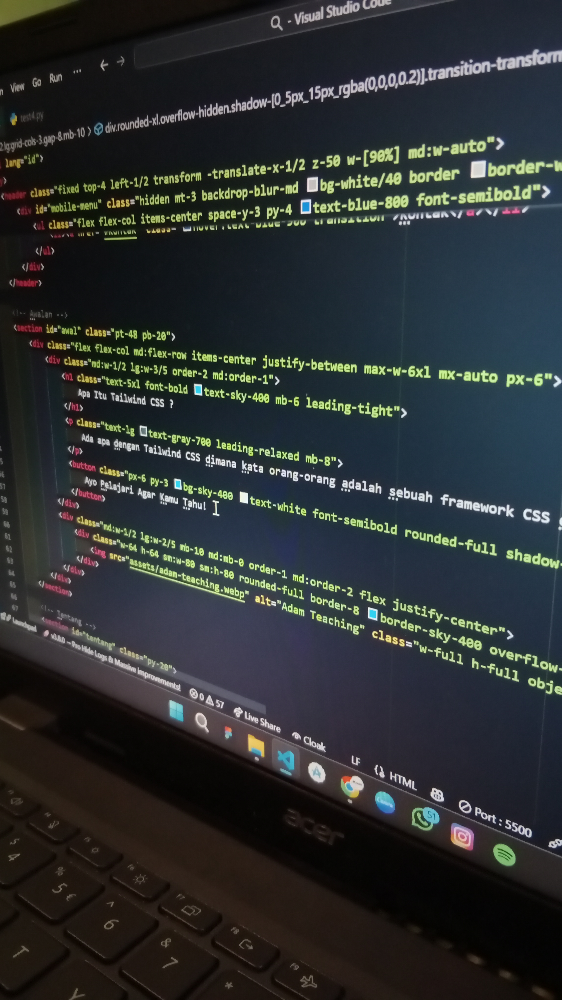
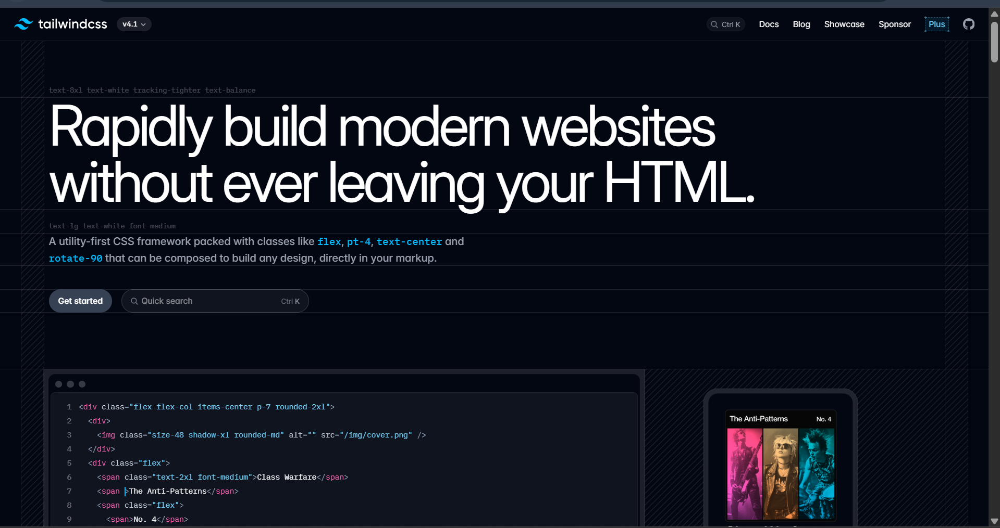
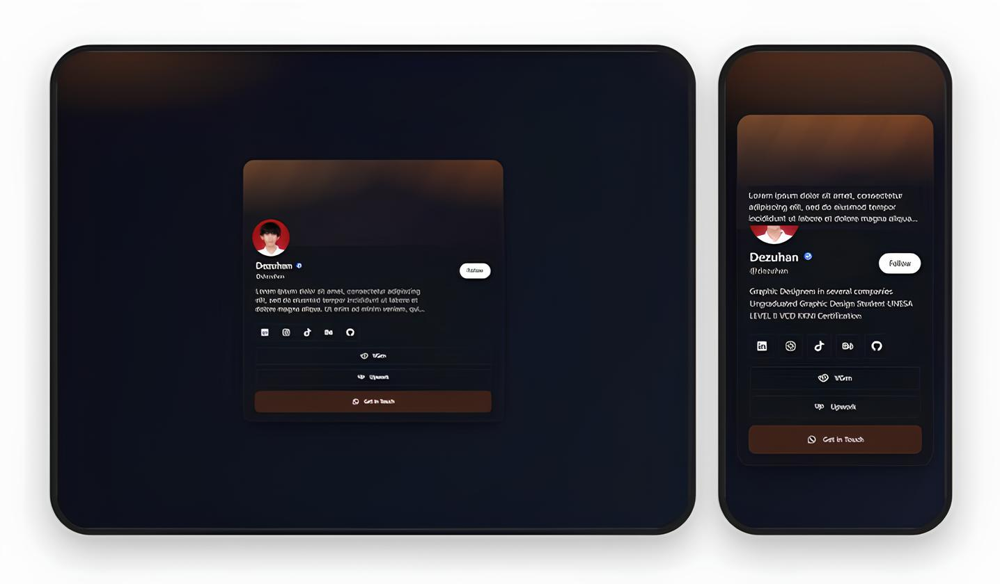
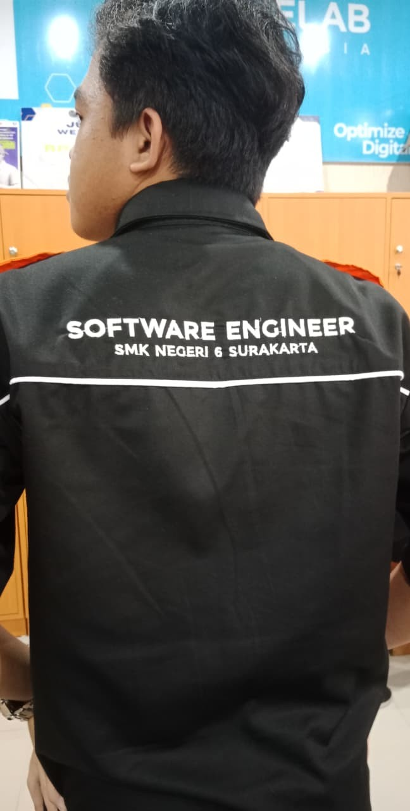
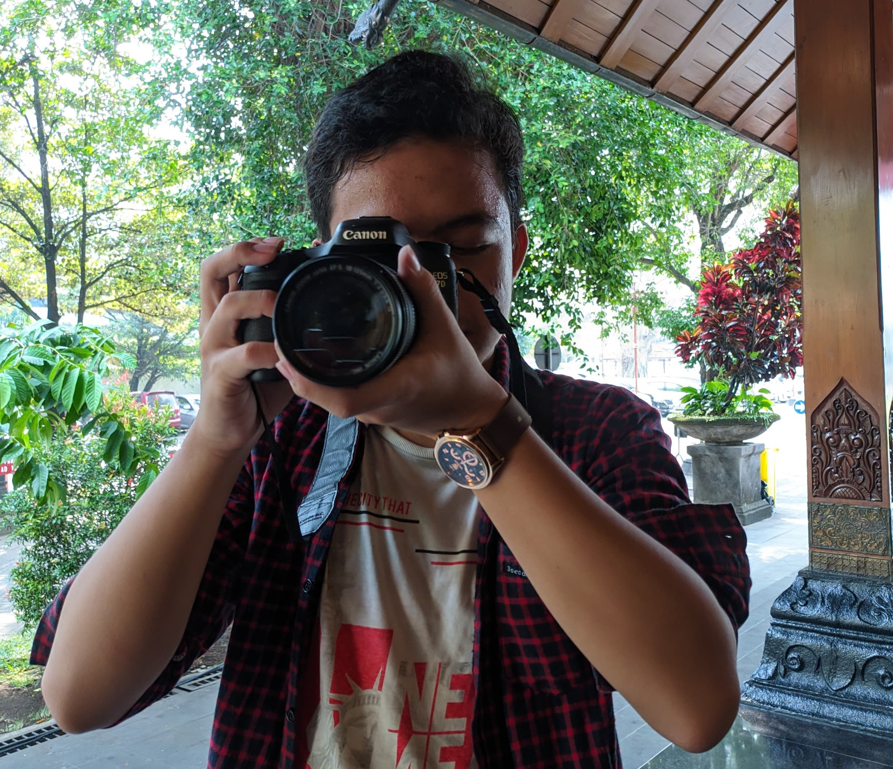
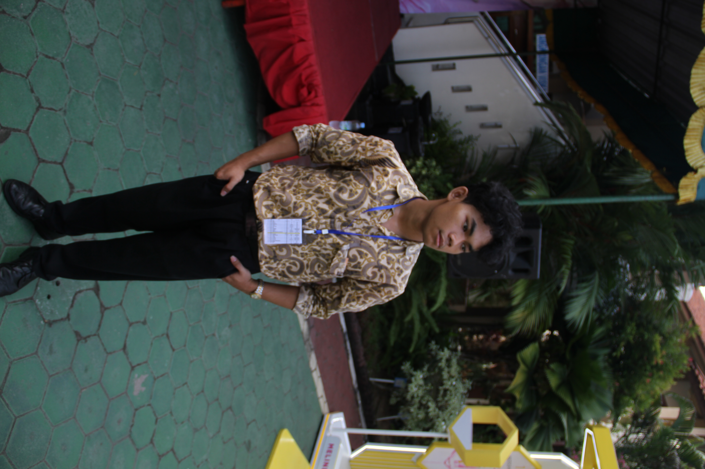

Ada apa dengan Tailwind CSS dimana kata orang-orang adalah sebuah framework CSS dengan gaya styling yang lebih cepat dan fleksibel daripada Vanilla CSS?
Tailwind CSS adalah framework CSS berbasis utility-first, yang menyediakan class-class siap pakai untuk membangun antarmuka pengguna langsung dari HTML. Alih-alih menulis CSS kustom atau menggunakan komponen siap pakai seperti di Bootstrap, Tailwind memungkinkan kamu menyusun desain dengan menggabungkan utility class seperti `p-4`, `text-center`, `bg-blue-500`, dan sebagainya. Dengan begitu kamu dapat styling web kamu dengan lebih cepat daripada kamu menggunakan Vanilla CSS.
Tailwind CSS dibuat oleh Adam Wathan dan timnya pada tahun 2017. Mereka menciptakan Tailwind untuk mengatasi tantangan dalam pengembangan web modern, seperti kesulitan dalam mengelola CSS yang kompleks dan kebutuhan untuk membuat desain yang konsisten. Sejak peluncurannya, Tailwind CSS telah menjadi salah satu framework CSS paling populer di dunia pengembangan web.

Tailwind CSS mengusung pendekatan utility-first, menyediakan class-class kecil dan spesifik langsung di HTML. Kebebasan ini membuat proses styling lebih cepat dan fleksibel—itulah alasan Tailwind begitu populer dibandingkan Vanilla CSS.

Fleksibel dan kalabel, kamu dapat membuat desain yang unik tanpa batasan yang sering ditemui pada framework komponen-based. Ukuran bundle CSS akhir juga lebih kecil. Styling dengan cepat gunakan Tailwind!

Jika kamu di Vanilla CSS perlu menulis banyak kode untuk styling responsive disegala tampilan, nah dengan Tailwind CSS kamu bisa styling responsive dengan cepat tanpa harus menulis kode panjang lebar.

"Tailwind ialah framework yang sangat bagus digunakan untuk styling web karena praktis dan simpel"

"Hey, kalian harus coba ini karena ini merupakan framework dengan kebebasan styling"

"Gausah repot-repot kali nulis CSS panjang mending Tailwind aja"
"Aku dipaksa Byan disuruh komentar disini"
Ayo Coba Tailwind!
Tailwind CSS adalah utility-first CSS framework, artinya kamu membangun tampilan web dengan menggabungkan class-class kecil seperti p-4, text-center, bg-blue-500, dan lainnya. Framework ini tidak menyediakan komponen siap pakai seperti Bootstrap (misalnya tombol atau navbar), tapi memberi kamu fleksibilitas penuh untuk mendesain dari nol.
Tailwind CSS bisa dianggap lebih baik daripada CSS biasa dalam hal kecepatan pengembangan, konsistensi desain, dan kemudahan pemeliharaan—terutama untuk proyek modern dan tim kolaboratif. Namun, “lebih baik” tergantung pada konteks dan kebutuhan proyekmu.
Ya, terutama jika kamu sudah memahami dasar-dasar HTML dan CSS. Tailwind membantu pemula belajar struktur desain dengan cepat karena semua styling dilakukan langsung di HTML.
Bisa. Tailwind mendukung dark mode secara native dengan class seperti dark:bg-gray-900 atau dark:text-white. Kamu bisa mengaktifkan mode gelap dengan menambahkan class dark di elemen root.
Bisa. Tailwind lebih fleksibel karena berbasis utility-first, sehingga mudah membuat desain custom. Bootstrap lebih cepat untuk prototyping karena menyediakan komponen siap pakai. Tapi kembali ke pilihan terbaik anda tergantung kebutuhan proyek yang dibuat.